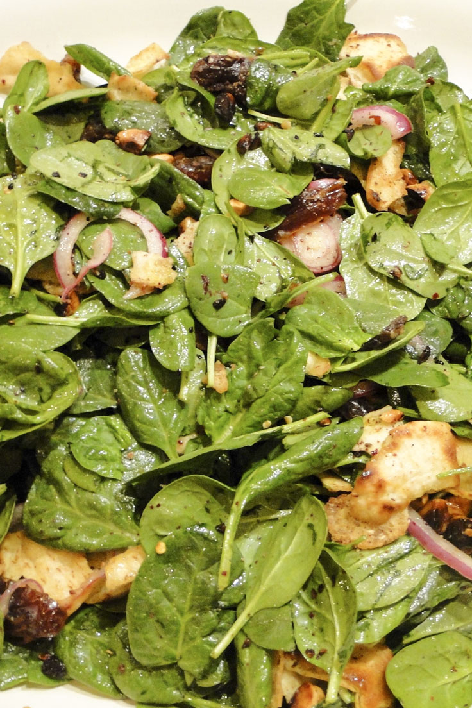

Pita Salad

A great unique take on salad
Ingredients
- 1 cup red onion sliced
- 1 Cup medjool dates, sliced
- I cup red wine vinegar
- Salt
- Butter
- 1 cup sliced almonds
- 4 pieces of slightly stale pita bread, torn into bite sized pieces
- 2 tbsp Sumac
- 1 tbsp Red chili flakes
- 2 cups spinach
- 1/2 cup Olive oil
- 1/2 cup Lemon juice
- Add the red onion, dates, salt and vinegar together in a bowl and let marinate for 30 minutes
- Heat butter in a pan and toast the almonds til fragrant, about 2-4 minutes
- Add the pita to the pan with the almonds and fry until crispy
- Transfer the almonds and pita to a bowl and added the sumac, chili flakes and salt and stir to coat
- Pour out the excess vinegar from the onion and date mixture and add to almond and pitas
- Add the spinach to all the other ingredients
- Add olive oil, lemon juice and a pinch of salt and toss to combine and taste for seasoning
- Enjoy!